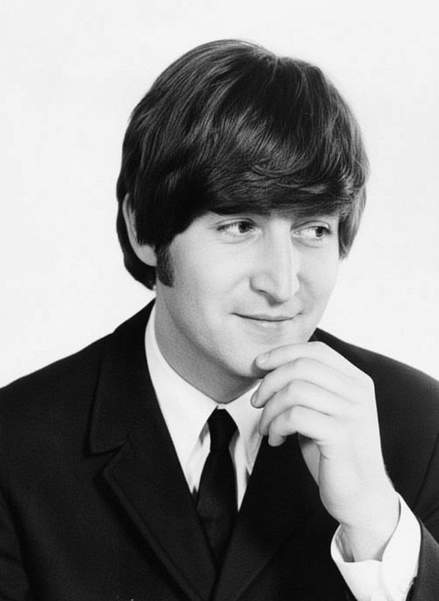
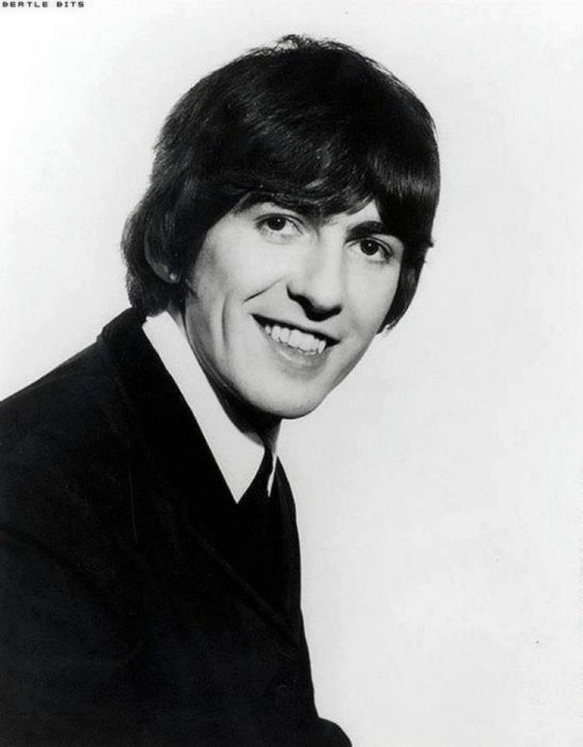
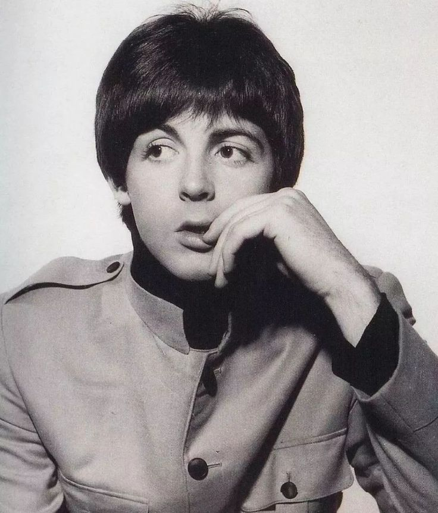
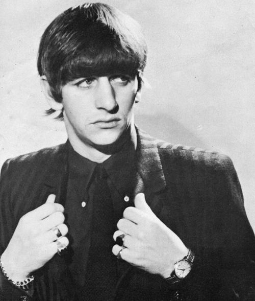

ABOUT THE BEATLES
The Beatles began their journey playing small clubs in Liverpool and Hamburg before gaining international attention. Their friendship, chemistry, and different musical personalities helped shape the sound that eventually made them famous around the world.
As their career developed, the four members continued to explore new creative ideas and take their music in unexpected directions. Their story includes years of touring, groundbreaking recordings, changing musical styles, and individual contributions that helped define the band's unique identity.

JOHN LENNON
1940 – 1980
John Lennon was a founding member of The Beatles and one of the band's primary songwriters. Known for his distinctive voice, sharp wit, and imaginative songwriting, Lennon played rhythm guitar and became an important creative force within the group.
Along with Paul McCartney, Lennon formed one of the most successful songwriting partnerships in popular music. His work with The Beatles included songs that helped define the band's changing musical style.
FUN FACTS
- John attended Liverpool College of Art and was admitted largely because of his artwork.
- His mother taught him to play the banjo and bought him his first guitar.
- John wrote two books featuring his own drawings, humor, and wordplay.

GEORGE HARRISON
1943 – 2001
George Harrison was the lead guitarist of The Beatles. Although Lennon and McCartney wrote most of the band's early material, Harrison developed into an accomplished songwriter during the group's career.
Harrison brought new musical influences to The Beatles and wrote several memorable songs, including "While My Guitar Gently Weeps," "Here Comes the Sun," and "Something."
FUN FACTS
- George became fascinated with Indian music and learned to play the sitar.
- He was a huge fan of the ukulele and often played it for friends.
- Outside of music, George enjoyed gardening and racing cars.

PAUL McCARTNEY
1942 – Present
Paul McCartney was the bassist and one of the principal songwriters of The Beatles. His melodic approach to songwriting helped produce many of the band's best-known songs.
McCartney and Lennon worked closely together as songwriters throughout The Beatles' career. McCartney also played several instruments and contributed to the band's increasingly varied musical arrangements.
FUN FACTS
- Paul is left-handed, which influenced the way he learned to play guitar.
- He wrote his first song when he was only 14 years old.
- After the Beatles, he wrote "Mull of Kintyre," inspired by the Scottish countryside.

RINGO STARR
1940 – Present
Ringo Starr became the drummer of The Beatles in 1962. His distinctive drumming style and personality made him an important part of the band's sound and character.
Starr contributed vocals to several Beatles recordings and became known for songs such as "With a Little Help from My Friends." His humor and personality were also an important part of the band's public image.
FUN FACTS
- Ringo is left-handed but played a right-handed drum kit.
- Several of Ringo's humorous expressions became known as "Ringoisms."
- Ringo later became the narrator of the children's television series Thomas the Tank Engine.